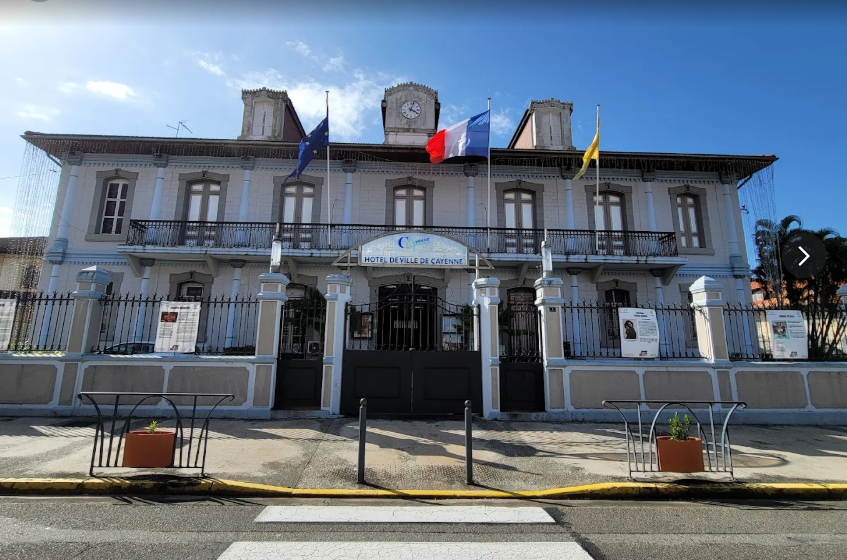

Mon stage à la Mairie de Cayenne
Stage réalisé au sein du service informatique de la Mairie de Cayenne, principalement dans la partie réseau.

Entreprise / Organisme
Mairie de Cayenne
Ville
Cayenne
Poste pendant mon stage
Stagiaire au service informatique - Réseau
Durée du stage
Du 27 Mai au 03 Juillet
Présentation de mon stage
Dans le cadre de ma formation en BTS SIO option SISR , j'ai effectué mon stage au sein de la Mairie de Cayenne .
J'ai été accueilli au sein du service informatique , principalement dans la partie réseau .
Cette expérience professionnelle m'a permis de découvrir le fonctionnement d'un service informatique en environnement professionnel et d'approfondir les connaissances acquises pendant ma formation.